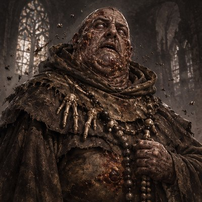
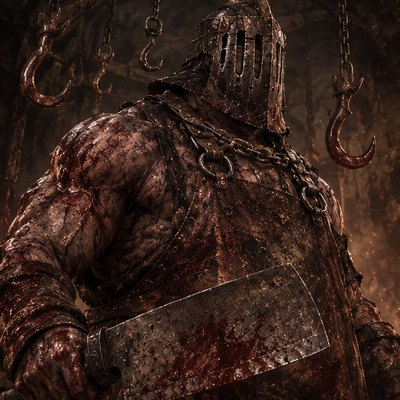
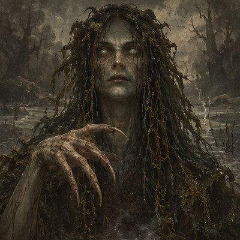
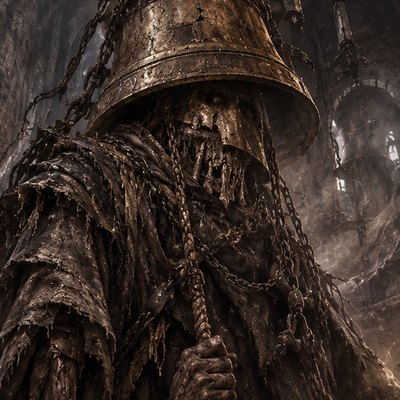
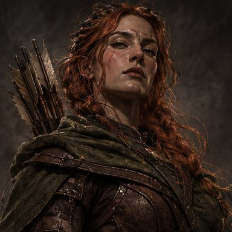
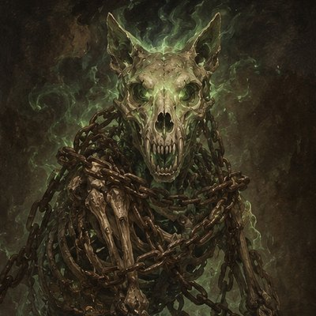

Akt I · Friedhof von Vhal
geschafft
Akt II · Die Alte Mühle
geschafft
Akt III · Katakomben
5 / 9
Akt IV · Moor der Gehenkten
gesperrtDer Metzger von Vhal muss fallen
Akt V · Eingestürzte Kapelle

Akt VI · Die Feuergruben
6 Akte statt 6 Orte. Jeder Akt: 8 Gebiete + Boss. Die bisherigen Krypta-Bosse werden die Akt-Bosse (Akt IV bekommt einen neuen). Der Boss öffnet den nächsten Akt.
Akt III · Katakomben
Knochen bis zur Decke, sortiert nach einer Ordnung, die kein Mensch erdacht hat.
Unten fängt der Akt an, oben wartet der Boss. Jedes Gebiet = 1 Kampf. Farbpunkte = was dort fallen kann: erst grau/weiß, später blau/gelb, Boss sicher selten+. Elite = bessere Beute, Boss-Mechanik steht vorher da.
Die Knochenhalle
Akt III · Gebiet 6 / 9 · Stufe 15
Knochenhund · Rudel, schnelle Bisse
Neues Gebietkostet nichts
Beute
BelohnungEP · Gold · Knochenstaub
Bei Niederlagenichts verloren, nochmal
Kampf sofort, kein Warten – Durchspielen soll flüssig sein. Bremse: nach einem Kampf kurze Erholung (z. B. 1 Min.), Glut nur fürs Farmen. Zu schwer? → Grube, Schmiede, Abgrund, Expedition – stärker zurückkommen.